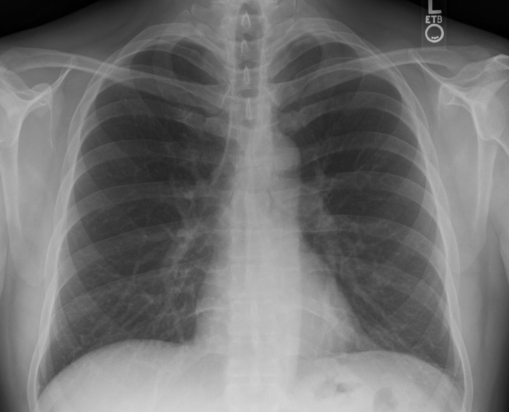
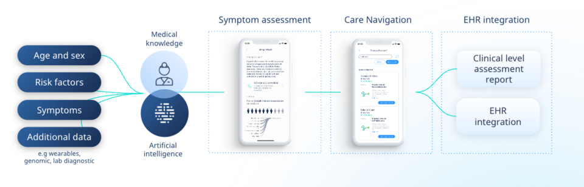

Executive Summary
2026년 4월 Science에 하버드 의대·베스 이스라엘 디코니스 병원 연구진의 논문이 실렸다. OpenAI의 o1-preview가 임상 추론 과제에서 수백 명의 의사 베이스라인을 충족하거나 넘어섰다는 내용이다. 복합 임상 비네트에서 모델의 정답률 중앙값은 89%, 검색엔진과 의학 데이터베이스를 쓴 의사는 34%였다. 헤드라인은 강렬하지만, 결과를 읽는 데는 한 가지 조건이 빠져 있다.
모델이 받은 입력은 전부 텍스트였다. 비네트도, 전자건강기록도 이미 누군가가 환자를 글로 옮겨 놓은 결과물이다. 실제 임상의는 영상을 판독하고, 청진음을 듣고, 환자의 표정과 창백함을 본다. 그 신호 대부분은 텍스트로 들어오기 전에 요약되거나 사라진다. 같은 연구의 실제 응급실 비교에서 모델과 전문의의 격차가 훨씬 작아진 이유가 여기에 있다.
이 글은 "AI가 의사를 이겼다"는 뉴스를 데이터의 렌즈로 다시 읽는다. 벤치마크와 현장의 차이는 정답률의 차이가 아니라 데이터가 어떤 모달리티로, 어떤 추상화 수준으로 표현되어 있는가의 차이다. 그것은 모델의 한계라기보다 데이터 표현의 문제다.
주요 수치
출처: Brodeur et al., Science (2026)
89% vs 34%
임상 비네트 정답률
o1-preview 중앙값 vs 의사
78/80
NEJM Healer 추론 점수
전문의 28/80, 전공의 16/80
동등
실제 응급실 2차 소견
정보 확보 시 전문의와 동점
텍스트 전용
모델 입력 모달리티
영상·청진·신체검진 제외
의사를 이겼다, 무슨 일이 있었나
연구진은 모델 하나를 여섯 갈래로 시험했다. 벤치마크 다섯 종에 실제 응급실 연구 하나를 더했다. 벤치마크는 NEJM 임상병리 컨퍼런스의 진단 퍼즐, 복합 임상 비네트, NEJM Healer 케이스 같은 "골드 스탠다드 의학 문제"들이다. 베이스라인은 전공의부터 전문의까지 수백 명의 의사였다.
결과는 일관되게 모델 쪽으로 기울었다. 복합 비네트 다섯 건에서 o1-preview의 정답률 중앙값은 89%, 검색엔진과 의학 데이터베이스를 자유롭게 쓴 의사는 34%였다(P<0.001). NEJM Healer 케이스 80건의 추론 품질 점수에서는 모델이 78/80, 전문의가 28/80, 전공의가 16/80을 기록했다. 모든 비교에서 통계적으로 유의했다.
다만 강점이 고르지는 않았다. 감별진단을 생성하고 진단·관리 추론의 품질을 평가하는 과제에서 모델은 뚜렷하게 앞섰지만, 확률적 추론과 트리아지 단계의 감별에서는 이전 세대 모델과 별 차이가 없었다. 복잡한 비판적 사고에는 강하고, 확률을 다루는 일에는 여전히 정체해 있었다.
가장 흥미로운 대목은 실제 응급실 연구다. 보스턴의 대형 3차 병원에서 무작위 환자를 대상으로 인간 전문가의 2차 소견과 AI의 2차 소견을 블라인드로 비교했다. 여기서 모델은 전문의와 동등하거나 약간 앞섰는데, 우위가 가장 또렷한 지점은 정보가 가장 적은 초기 트리아지였다. 입원 시점처럼 정보가 충분히 쌓이면 격차는 사라졌다.
모델이 본 것은 환자가 아니라 '글'이었다
헤드라인을 정확히 읽으려면 모델이 무엇을 입력으로 받았는지를 먼저 봐야 한다. o1-preview가 본 것은 환자가 아니라 글이다. 임상 비네트는 누군가가 환자의 호소와 소견과 검사 결과를 이미 문장으로 옮겨 놓은 결과물이고, 전자건강기록 역시 텍스트다. 공동 시니어 저자 Adam Rodman은 모델이 "말 그대로 건강기록에 존재하는 그대로의 데이터를 처리할 뿐"이라고 표현했다.
그래서 89%라는 숫자는 "임상 현실"에 대한 점수가 아니라 이미 텍스트로 변환된 임상 현실에 대한 점수다. 환자를 글로 옮기는 가장 까다로운 단계, 곧 무엇을 보고 무엇을 적을지 결정하는 단계는 모델이 채점받기 전에 이미 끝나 있었다.
연구진도 이 점을 숨기지 않았다. 논문은 텍스트 전용 설계라는 한계를 명시한다. 신체검진을 수행하거나 X-ray·CT·MRI를 직접 판독하는 일은 평가 범위 밖이었다. Rodman은 "실험실 결과를 실제 환자 치료의 안전성·효능 증거로 오독하지 말라"고 못 박았고, 공동 1저자 Peter Brodeur는 "모델이 1순위 진단을 맞히더라도 불필요한 검사를 권해 환자를 위험에 빠뜨릴 수 있다"며 인간이 성능과 안전의 궁극적 베이스라인이어야 한다고 덧붙였다.
Science에 함께 실린 논평(Hopkins & Cornelisse)은 89% 대 34%라는 프레이밍에 직접 제동을 걸었다. 실제 응급실 데이터의 일대일 비교에서 o1-preview가 두 전문의를 앞선 것은 정보가 희박할 때 근소한 차이였고, 정보가 충분해지면 동등했다. 대중에 회자되는 격차만큼 크지 않다는 것이다.
진짜 임상의가 읽는, 텍스트에 없는 것들
현실의 임상의는 텍스트만 읽지 않는다. 진단의 상당 부분은 글이 되기 전의 원신호에서 온다. 이 신호들은 전자건강기록에 들어올 때 이미 요약되거나 해석되거나 아예 누락된다. 모델이 채점받는 비네트에는 다음 네 가지가 거의 남아 있지 않다.
이미지
X-ray·CT·MRI, 피부 병변, 안저 소견을 직접 시각으로 판독한다. "폐 하부에 음영"이라는 한 줄로 옮겨지기 전의 원본이다.
소리
청진음의 심음과 폐음, 수포음, 환자 음성의 떨림. 텍스트로는 "수포음 청취" 정도로만 압축된다.
비언어 신호
표정과 자세, 통증 반응, 창백함, 식은땀. 트리아지 직관의 큰 부분이 여기서 나오지만 기록에는 거의 남지 않는다.
촉진과 타진
손끝으로 얻는 신체검진 정보. 압통의 위치와 강도, 장기의 경계는 숫자나 문장으로 환원되지 않는다.
앞 절에서 모델의 우위가 가장 컸던 지점은 "정보가 가장 적은 초기 트리아지"였다. 정보가 적다는 것은 곧 텍스트로 정제할 시간이 없었다는 뜻이기도 하다. 인간 임상의가 멀티모달 신호로 채우는 바로 그 빈칸에서, 텍스트만 받은 모델이 상대적으로 앞섰다는 해석이 가능하다. 비교의 운동장이 처음부터 텍스트로 기울어 있었던 셈이다.
'AI 한계'가 아니라 '데이터 표현'의 문제다
여기서 한 걸음 더 들어가면 익숙한 질문이 나온다. 벤치마크 89%와 현장의 근소한 우세 사이에서 무엇이 사라졌나. 흔한 대답은 "AI가 아직 부족해서"다. 그러나 데이터 실무자에게 더 정확한 진단은 다른 쪽에 있다. 이것은 모델의 능력 문제이기 이전에 데이터 표현의 문제다.
벤치마크에서의 승리는 입력이 이미 모델에 유리한 표현, 곧 텍스트로 정제된 환경에서의 승리다. 현장에서는 멀티모달 원신호를 임상적으로 의미 있는 표현으로 바꾸는 단계 자체가 진단의 일부다. 그런데 벤치마크는 바로 그 변환 단계를 인간 기록자에게 외주로 넘긴다. 모델은 변환이 끝난 깨끗한 텍스트에서 출발하고, 의사는 변환을 직접 수행하면서 동시에 판단한다.

이 진단을 받쳐 주는 보강 근거가 여럿 있다. 멀티모달 LLM에 이미지를 더하면 정확도가 오르지만(한 연구에서 70.8%에서 84.5%로), 인간만큼 시각 정보로 이득을 보지는 못한다. 모델이 텍스트를 시각 단서보다 과대 가중하는 경향이 관찰된다. Nature Medicine은 의사면허시험 고득점이 실세계 진단 능력과 같지 않다는 "면허시험 오류(licensing exam fallacy)"를 지적했다. 실제 환자 데이터에서 LLM은 진단 정확도가 의사보다 유의하게 낮았고, 필요한 검사를 요청하지 않았으며, 검사 순서에 민감했다.
같은 모양이 다른 연구에서도 반복된다. 21개 LLM을 평가한 분석에서 모델들은 전체 정보가 주어진 최종 진단에서는 90%를 넘겼지만, 정보가 부족한 초기 추론 단계에서는 일관되게 부진했다. 앞서 본 응급실 결과와 정확히 겹치는 그림이다. 정보가 텍스트로 충분히 정리된 뒤에는 강하고, 그 정리가 끝나기 전에는 약하다. 강점과 약점을 가르는 선은 모델의 똑똑함이 아니라 입력이 얼마나 잘 정제된 표현으로 들어왔는가에 그어진다.
그래서 "시험 데이터"와 "현장 데이터"의 차이는 정답률의 차이가 아니다. 데이터가 어떤 모달리티로, 어떤 추상화 수준으로 표현되어 있는가의 차이다. 같은 환자라도 텍스트로 옮겨진 환자와 영상·소리·촉감으로 존재하는 환자는 모델에게 전혀 다른 입력이다. 벤치마크는 전자를 다루고, 현장은 후자를 다룬다.
'시험 데이터'의 승리를 '현장 데이터'로 번역하기
이 이야기는 의료에만 해당하지 않는다. 모델을 평가하고 배치하는 모든 자리에서 같은 구조가 반복된다. SOTA 점수를 만나면 먼저 물어야 할 것은 "몇 점인가"가 아니라 "그 점수가 어떤 표현의 데이터에서 나왔는가"다. 벤치마크 입력이 현장 입력과 같은 모달리티, 같은 추상화 수준인지를 확인하지 않으면, 시험장의 성적표를 현장의 보증서로 오독하게 된다.
실무로 옮기면 질문은 구체적이다. 우리가 모델에 넣는 데이터는 현장의 원신호를 손실 없이 담고 있는가, 아니면 누군가의 요약을 거친 정제본인가. 정제 과정에서 어떤 모달리티가 통째로 빠졌는가. 평가셋과 운영 환경 사이에 모달리티 격차가 있다면, 그 격차는 모델을 더 키워서가 아니라 데이터 표현을 손봐서 좁혀야 한다.

AI-Ready Data의 본질이 여기에 있다. 현장의 멀티모달 현실을 모델이 쓸 수 있는 표현으로, 가능한 한 손실 없이 옮기는 일이다. o1-preview의 89%는 그 변환이 이미 끝난 자리에서 받은 점수였다. 변환을 누가 어떻게 하느냐가 곧 다음 경쟁의 무대다.
텍스트만 읽고 의사를 이긴 AI는 분명 의미 있는 진전이다. 동시에 그것은 시험 데이터에서의 승리이지 현장 데이터에서의 승리가 아니다. 둘 사이를 잇는 다리는 더 똑똑한 모델이 아니라, 현장의 신호를 충실히 표현하는 데이터다.
FAQ
참고문헌
R.1학술 논문
- 1.Brodeur PG, Buckley TA, Kanjee Z, et al. (2026). "Performance of a large language model on the reasoning tasks of a physician." Science 392, 524. DOI: 10.1126/science.adz4433.
- 2.Hopkins MM, Cornelisse R. (2026). "동반 논평: 벤치마크 우위와 현장 성능의 간극." Science (companion commentary).
- 3."의사면허시험 고득점이 실세계 진단 능력과 같지 않은 이유 (licensing exam fallacy)." Nature Medicine (2024).
- 4.Mass General Brigham. (2026). "21개 LLM 평가: 전체 정보 시 최종 진단은 정확하나 초기 추론 단계에서 부진." JAMA Network Open 연계 보도 (2026).
R.2보도·기관 자료
- 5.STAT News. (2026.04.30). "OpenAI LLM model outperforms doctors, study published in journal Science."
- 6.EurekAlert! (2026). "Harvard Medical School·Beth Israel Deaconess 보도자료."
- 7.News-Medical / Inside Precision Medicine. (2026.05). "AI model outperforms doctors in clinical reasoning tests."
읽어주셔서 감사합니다. AI 성능 뉴스를 만날 때마다 "그 점수가 어떤 표현의 데이터에서 나왔는가"를 함께 묻는 습관이, 시험장과 현장 사이의 거리를 더 정확히 가늠하게 해 줄 것입니다. 이 주제에 대한 생각이나 반론이 있으시면 언제든 나눠 주세요.
(주)페블러스 데이터 커뮤니케이션팀
2026년 6월 12일